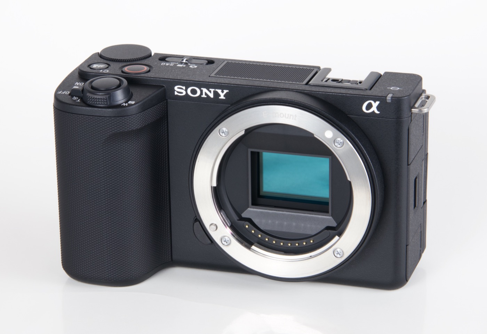
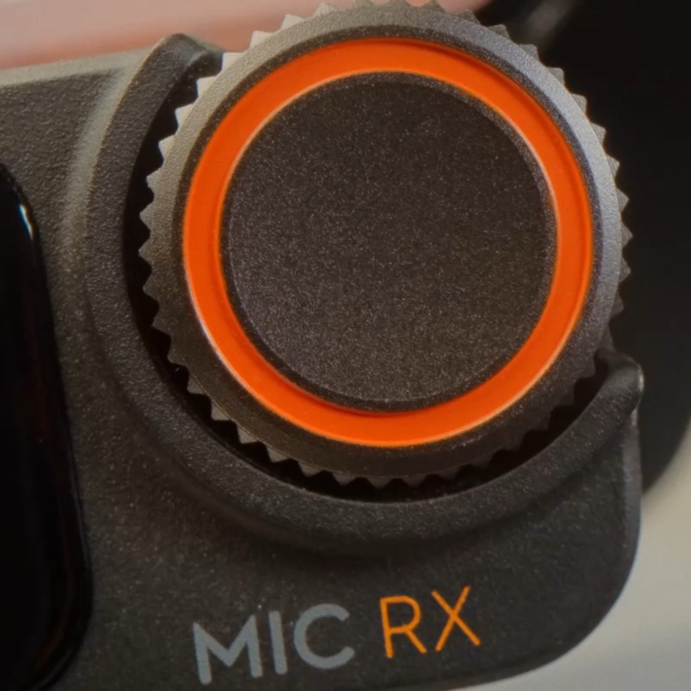
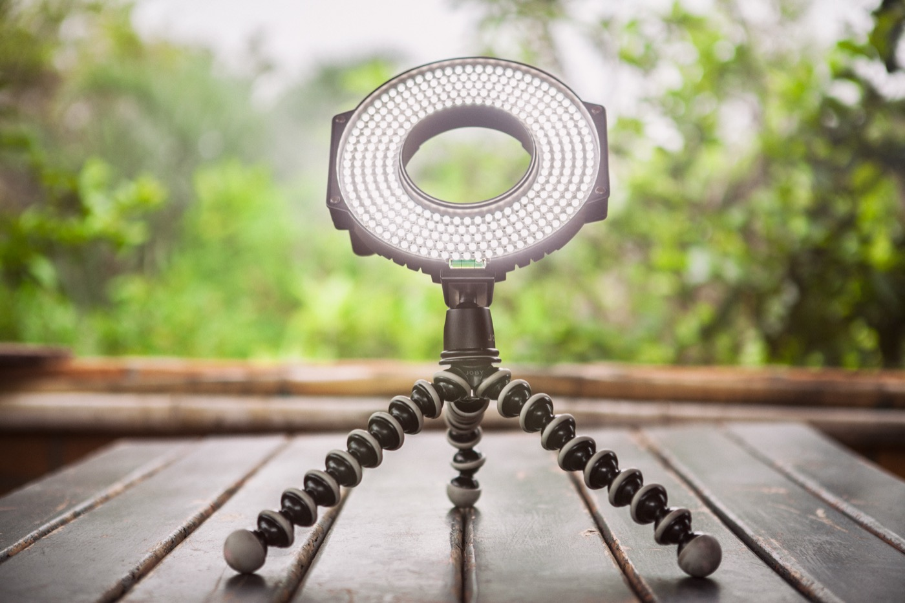
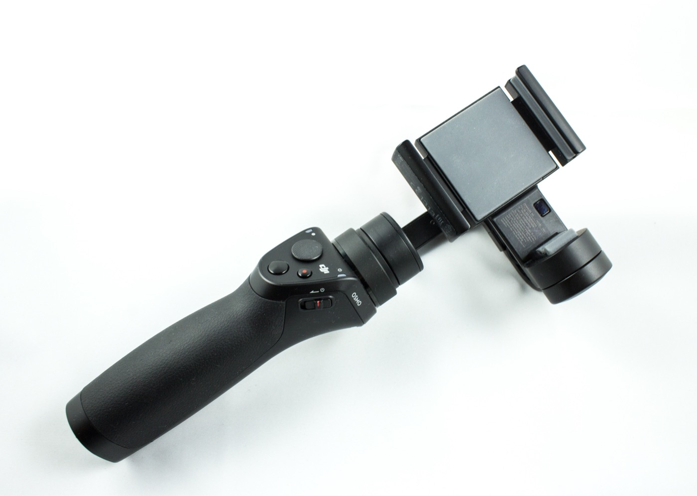
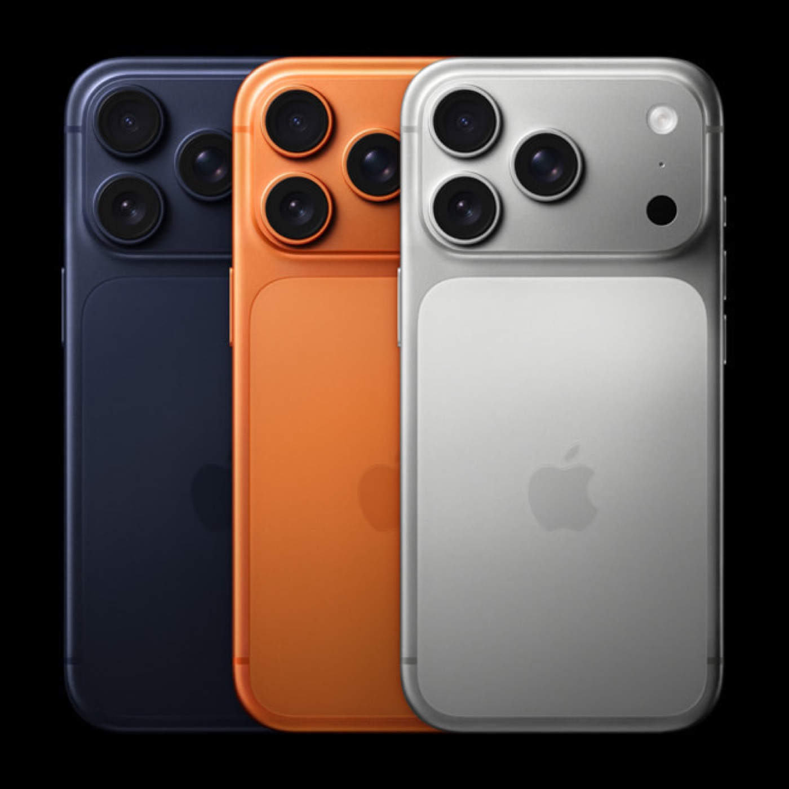

Sony ZV-E10 Mark II
Caméra hybride légère pour des plans nets et une texture plus premium.
Astra Studio se déplace avec son matériel pour produire des contenus professionnels en contexte réel : marque, point de vente, événement, atelier ou bureau.
Cinq familles d'équipement couvrent la majorité des besoins social-first et brand content.
Caméra hybride légère pour des plans nets et une texture plus premium.
Voix plus claire en face caméra, interview et contenus parlés.
Rendu visage et produit plus maîtrisé, même en environnement imparfait.
Mouvements plus fluides pour Reels, TikTok, plans walk & talk.
Tournage réactif multi-angles et formats natifs réseaux sociaux.
L'objectif n'est pas de montrer des specs, mais de clarifier ce que chaque outil rend possible.

Sony ZV-E10 Mark IIIdéale pour des plans produits, interviews et contenus qui doivent garder un niveau visuel net.

DJI Mic MiniLe kit micro travel permet de sécuriser la voix en déplacement et d'éviter l'effet amateur.

Ring lights & spotsLa lumière est ajustée pour garder des couleurs propres et éviter les ombres qui dégradent l'image.

Stabilisateur iPhoneLe stabilisateur mobile évite les micro-secousses et améliore la lecture des plans en déplacement.

iPhone 17 Pro • 16 • 11Les iPhones permettent de tourner vite, en formats natifs, avec une exécution plus agile sur site.
Le matériel sert une logique d'exécution : utile, agile et orientée contenus exploitables.
Capsules incarnées, prises de parole dirigeant, formats expertise.
Démonstration, texture, routine et héroïsation des références clés.
Formats natifs Reels, TikTok, stories et variation multi-angle.
Tournage en boutique, showroom, atelier, événement ou bureau.
Le dispositif est pensé pour se déplacer avec efficacité : préparation légère, set mobile et livraison de contenu exploitable rapidement.
Interventions rapides en journée ou demi-journée selon planning.
Déplacements organisés selon périmètre, volume de tournage et livrables.
Installation agile pour limiter l'impact opérationnel côté client.
Astra Studio n'est pas un loueur low-cost. Cette mise à disposition est proposée dans un cadre professionnel, prioritairement en complément d'une mission.
Pour des tournages agiles, contenus UGC et formats sociaux sur site.
Après-midi à partir de 180 EUR
Journée à partir de 290 EUR
Semaine à partir de 990 EUR
Configuration recommandée pour rendu premium et tournage multi-formats.
Après-midi à partir de 320 EUR
Journée à partir de 520 EUR
Semaine à partir de 1790 EUR
Pour compléter un tournage existant avec un cadre plus propre et plus stable.
Après-midi à partir de 90 EUR
Journée à partir de 150 EUR
Semaine à partir de 520 EUR
Tarifs indicatifs hors transport spécifique, assurance et caution éventuelle. Validation finale sur devis selon durée, lieu d'intervention et niveau d'accompagnement demandé.